Instrumento técnico de contrastación empírica en tiempo real sobre el prototipo interactivo.
71 Principios AuditadosJeff Johnson (Designing with the Mind in Mind)14 Capturas Verificadas100% Sin Alucinaciones
1. Dashboard de Cobertura de Principios
Estado
Cantidad
% Total
Justificación de Ingeniería e IHC
✅ Aplicado
44
62.0%
Comprobado en el DOM con componente y estilos dedicados.
🟡 Parcial
11
15.5%
Operativo en la demo; con margen de enriquecimiento analítico.
🔴 Pendiente de prueba
2
2.8%
Requiere pruebas de laboratorio con usuarios humanos (C4.7, C6.12).
⛔ Excluido deliberado
2
2.8%
Omitido para proteger la concentración lectora del estudiante (C2.7, C5.4).
➖ No aplica al alcance
12
16.9%
Funcionalidades fuera del alcance (interfaces de voz, base de datos).
TOTAL AUDITADO
71
100%
Cobertura sobre software aplicable: 93.2%
2. Ruta de Evaluación Rápida en 5 Minutos (Para el Docente)
Siga este itinerario de 6 pasos en el navegador con index.html abierto:
1. Header persistente (1 clic): Alterne entre 'Conversación escrita', 'Lecciones y repaso' y 'Redacción asistida'. Verifique que el modo se resalta y el pie del chat lo confirma (C1.1, C1.2, C7.5, C7.8).
2. Corrección foveal con diff: En 'Redacción asistida', examine la tarjeta central con texto original tachado y propuesta verde. Pulse 'Usar esta sugerencia' y observe el cambio a resuelto con botón 'Deshacer' (C2.1, C4.1, C4.5, C5.1, C8.2, C8.8).
3. Ayuda graduada a demanda: Bajo el chat, pulse 'Pista', 'Explicación' y 'Ejemplo'. La tarjeta adapta su prosa sin recargar (C1.3, C3.7, C6.10, C7.10).
4. Acceso al progreso en 1 clic: Pulse 'Ver progreso' junto a las etapas numeradas. Se despliega inmediatamente el resumen en el panel lateral (C3.5, C7.1, C7.8, C8.3, C8.5).
5. Lectura y guardado léxico: En 'Lecciones y repaso', pulse la palabra 'productive' en el artículo y luego 'Guardar palabra'. Aparece en el panel de vocabulario (C3.4, C8.4, C8.7).
6. Historial inmutable: En el footer, abra 'Ver chats' y compruebe el orden taxonómico estable (C1.2, C5.9, C7.1).
3. Catálogo de Principios Verificados en la Interfaz (55 Principios)
C1 — La percepción es sesgada
C1.1 · Evitar la ambigüedad✅ Aplicado
Regla Teórica: Cada elemento de la interfaz debe tener una sola interpretación plausible para el usuario objetivo.
Ubicación en UI:Barra superior (#mode-nav) y botones de acción en tarjetas (.correction-actions)
Cómo Comprobarlo: 1. Observar la barra superior: los 3 botones tienen nombres directos ('Conversación escrita', 'Lecciones y repaso', 'Redacción asistida'). 2. En la tarjeta de corrección central, los botones no usan etiquetas ambiguas como 'OK', sino verbos claros: 'Usar esta sugerencia' y 'Mantener mi frase'.
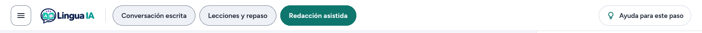
Evidencia visual: Barra superior con botones claros y sin ambigüedad
Justificación de IHC: Elimina el costo cognitivo de adivinar el resultado de una acción, permitiendo que la atención del estudiante se enfoque en aprender inglés y no en interpretar la interfaz.
C1.2 · Mantener consistencia de ubicación y apariencia✅ Aplicado
Regla Teórica: La misma función debe aparecer en la misma posición, con el mismo color, tipografía y comportamiento en todas las vistas.
Ubicación en UI:Header persistente, botón 'Apoyo', barra de etapas y drawer de historial (#history-drawer)
Cómo Comprobarlo: 1. Cambiar entre las 3 tareas haciendo clic en los botones del header: la barra superior, la posición de las etapas, el drawer y el footer de historial permanecen idénticos. 2. Los colores de estado (verde para aceptado/avance, rojo/coral para gramática) son consistentes en todas las vistas.
Evidencia visual: Navegación persistente y uniforme en el header
Justificación de IHC: El cerebro del usuario crea plantillas perceptivas automáticas; la consistencia espacial evita que tenga que re-escanear la pantalla ante cada cambio de modo.
C1.3 · Diseñar para las metas del usuario✅ Aplicado
Regla Teórica: La información necesaria para el objetivo del usuario debe estar disponible, ser prominente y estar ligada a la acción siguiente.
Ubicación en UI:Columna central de trabajo (.chat-column) y selector de niveles de ayuda (#help-levels)
Cómo Comprobarlo: 1. En 'Redacción asistida', el foco principal es el correo y la sugerencia activa. 2. Justo debajo del chat, los botones 'Pista', 'Explicación', 'Ejemplo' y 'Reescritura completa' permiten al estudiante ajustar el nivel de asistencia según su meta de aprendizaje inmediata.
Evidencia visual: Selector de nivel de ayuda situado junto a la meta del estudiante
Justificación de IHC: El estudiante busca comprender un error o redactar un texto; ofrecer ayuda graduada en el centro de atención apoya directamente su objetivo cognitivo sin pasos intermedios.
C2 — La visión está optimizada para ver estructura
C2.1 · Proximidad: agrupar lo relacionado✅ Aplicado
Regla Teórica: Los elementos relacionados deben estar más cerca entre sí que de los elementos no relacionados; el espacio en blanco debe separar grupos.
Ubicación en UI:Tarjeta de corrección central (.correction-card)
Cómo Comprobarlo: Examinar la tarjeta central: la categoría (Gramática), el título del error ('Concordancia verbal'), el diff antes/después, la pista explicativa y los botones de decisión están agrupados en un contenedor unificado con bordes y padding claro.
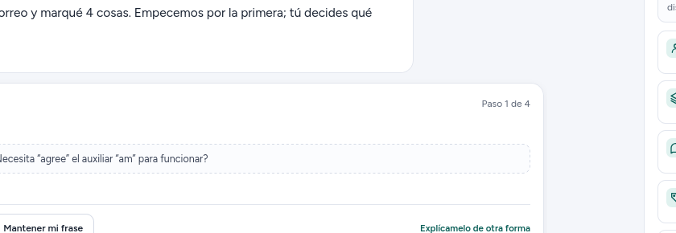
Evidencia visual: Agrupación por proximidad en tarjeta de corrección
Justificación de IHC: La ley de proximidad de la Gestalt hace que el usuario perciba el problema, la solución propuesta y la decisión como una sola unidad conceptual.
C2.2 · Similitud: mismo aspecto para la misma función✅ Aplicado
Regla Teórica: Los elementos que cumplen la misma función deben parecerse; los que cumplen funciones distintas deben diferenciarse visualmente.
Ubicación en UI:Píldoras de modo (.mode-pill), píldoras de ayuda (.help-pill) y chips de vocabulario (.word-chip)
Cómo Comprobarlo: 1. Todos los botones de modo comparten forma redondeada de 22px de radio y estado activo teal. 2. Los chips de vocabulario comparten altura y estilo visual. 3. Los botones de acción primaria ('btn-primary') usan fondo teal consistente en modales y tarjetas.
Evidencia visual: Similitud visual en píldoras de navegación
Justificación de IHC: Permite el reconocimiento visual instantáneo de qué elementos son accionables y a qué categoría de control pertenecen.
C2.3 · Continuidad: alinear y no interrumpir✅ Aplicado
Regla Teórica: Los elementos deben alinearse siguiendo líneas continuas; una secuencia visual no debe interrumpirse sin motivo.
Ubicación en UI:Línea de etapas (#stagebar .stages) y columna de chat (#chat-messages)
Cómo Comprobarlo: Observar la barra superior de etapas: los círculos numerados están unidos por una línea horizontal continua (.stage-line) que guía la mirada de izquierda a derecha. En el chat, los mensajes mantienen una alineación vertical estricta a 800px de ancho.
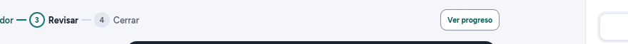
Evidencia visual: Continuidad visual en la secuencia de etapas
Justificación de IHC: La continuidad perceptiva guía el barrido ocular natural y refuerza la noción de progresión lineal en el proceso de revisión.
C2.4 · Cierre: formas simples y reconocibles✅ Aplicado
Regla Teórica: Las formas deben ser lo bastante simples para que el sistema visual las reconozca como un todo sin exigir contornos perfectos.
Ubicación en UI:Iconos SVG lineales (Icons.js) y badges de estado (.status-pill)
Cómo Comprobarlo: Examinar los iconos de la app (menú hamburguesa, bombilla de ayuda, check de completado, flecha de enviar): usan trazo uniforme de 2px, figuras geométricas básicas y siluetas cerradas fácilmente reconocibles sin detalles innecesarios.
Evidencia visual: Iconos y formas simples de fácil cierre visual
Justificación de IHC: Reduce el tiempo de fijación foveal al permitir el reconocimiento instantáneo de iconos comunes.
C2.5 · Simetría: reducir complejidad✅ Aplicado
Regla Teórica: Los layouts deben usar equilibrio para reducir la complejidad visual y facilitar la comparación.
Ubicación en UI:Estructura principal (.workspace) y tarjetas estadísticas (.stat-grid)
Cómo Comprobarlo: 1. El área de trabajo se divide en dos bloques proporcionales: columna principal centrada a 800px y panel lateral fijo a 420px. 2. En el panel de progreso, las métricas usan una cuadrícula simétrica de 2 tarjetas ('stat-card') con pesos visuales equivalentes.
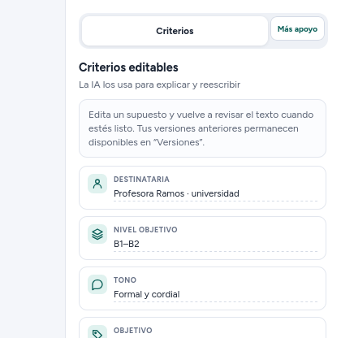
Evidencia visual: Equilibrio simétrico en tarjetas estadísticas
Justificación de IHC: La simetría visual disminuye la carga cognitiva de procesamiento espacial, dando orden y estabilidad a la interfaz.
C2.6 · Figura/fondo: separar planos✅ Aplicado
Regla Teórica: El primer plano debe distinguirse claramente del fondo; modales, overlays y menús deben percibirse como planos separados.
Ubicación en UI:Modal de reglas (#modal-overlay) y drawers deslizables (#drawer-overlay, #history-overlay)
Cómo Comprobarlo: Hacer clic en 'Ver regla completa' dentro de la tarjeta de corrección: la pantalla se oscurece con un fondo translúcido difuminado (backdrop-filter: blur) y el modal se eleva con una sombra pronunciada (box-shadow: 0 18px 44px).
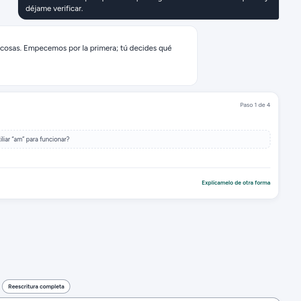
Evidencia visual: Separación nítida de figura y fondo mediante overlay oscuro y elevación
Justificación de IHC: Aísla la atención del usuario en la explicación pedagógica actual eliminando distracciones visuales del texto de fondo.
C2.8 · Revisar las agrupaciones combinadas🟡 Parcial
Regla Teórica: La pantalla debe revisarse con todos los principios Gestalt actuando a la vez para detectar relaciones no intencionadas.
Ubicación en UI:Relación entre columna central y panel lateral (#side-panel)
Cómo Comprobarlo: Observar cómo el panel lateral de apoyo y el chat central nunca repiten el mismo contenido (en redacción el panel oculta la pestaña de texto para no duplicar el centro). Queda parcial pendiente prueba con desenfoque de desenfoque visual formal.
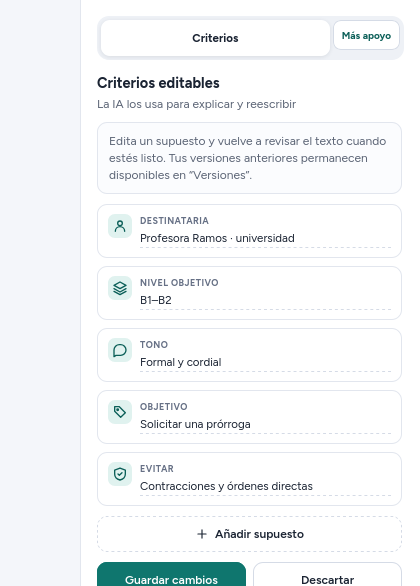
Evidencia visual: Coexistencia visual armónica entre chat y panel de criterios
Justificación de IHC: Garantiza que la combinación de proximidad, similitud y bordes no cree falsas asociaciones entre herramientas secundarias y la tarea activa.
C3 — Buscamos y usamos estructura visual
C3.1 · Presentar información tersa y estructurada✅ Aplicado
Regla Teórica: La información debe presentarse de forma breve y estructurada: listas, bloques con etiquetas, no párrafos largos de datos.
Ubicación en UI:Panel de Criterios editables (#aside-content) y panel de Reglas (#aside-content .rule-card)
Cómo Comprobarlo: 1. Abrir la pestaña 'Criterios': cada supuesto (Destinataria, Nivel, Tono, Objetivo) se presenta en una tarjeta estructurada con icono, etiqueta corta y valor editable. 2. En las reglas, se segmenta en 'Correcto' (verde) y 'Evitar' (rojo).
Evidencia visual: Criterios estructurados en bloques concisos con iconos y etiquetas
Justificación de IHC: Facilita la lectura rápida y el cotejo visual sin obligar al usuario a leer párrafos continuos de instrucciones.
C3.2 · Establecer una jerarquía visual✅ Aplicado
Regla Teórica: La pantalla debe dividirse en secciones con jerarquía clara de tamaño, prominencia y posición; lo crucial arriba y con más peso.
Ubicación en UI:Header -> Barra de etapas -> Chat de trabajo -> Composer -> Panel lateral
Cómo Comprobarlo: Examinar el flujo visual: 1. Nivel superior: Modo activo (h1 oculto y píldoras prominentes). 2. Subnivel: Etapas de avance. 3. Centro: Tarjeta con tipografía de 15px en negrita para el error y 13.5px para el diff. 4. Lateral: Información de soporte de 11px a 14.5px.
Evidencia visual: Jerarquía visual clara desde el encabezado hasta la tarjeta de decisión
Justificación de IHC: Permite al estudiante escanear de un vistazo dónde está ubicado, qué debe resolver primero y dónde buscar ayuda si la necesita.
C3.3 · Usar encabezados semánticos🟡 Parcial
Regla Teórica: Los encabezados deben usar elementos y niveles semánticos reales (h1–h6) para lectores de pantalla.
Ubicación en UI:index.html (#page-title) y títulos de sección (h3, h4)
Cómo Comprobarlo: En el código HTML existe un `
Lingua IA · Redacción asistida
` que se actualiza dinámicamente con el modo activo. Los módulos usan `
` y `
`. Es parcial porque falta completar la auditoría con NVDA/VoiceOver de toda la jerarquía intermedia.
Evidencia visual: Encabezado principal accesible para lectores de pantalla
Justificación de IHC: Permite a usuarios con tecnologías asistivas navegar directamente a los hitos de la página sin tener que recorrer todo el árbol del DOM.
C3.4 · Agrupar contenido similar✅ Aplicado
Regla Teórica: El contenido del mismo tipo debe compartir estilo visual o estar dentro de un área claramente definida.
Ubicación en UI:Tiras de escenarios (.scenario-strip) y lista de palabras (.word-picker)
Cómo Comprobarlo: 1. En 'Conversación escrita', los escenarios ('Entrevista de trabajo', 'Café con un amigo', 'Conversación universitaria') están contenidos en una tira horizontal con diseño idéntico. 2. En 'Lecciones', las palabras clave del texto aparecen agrupadas en chips homogéneos.
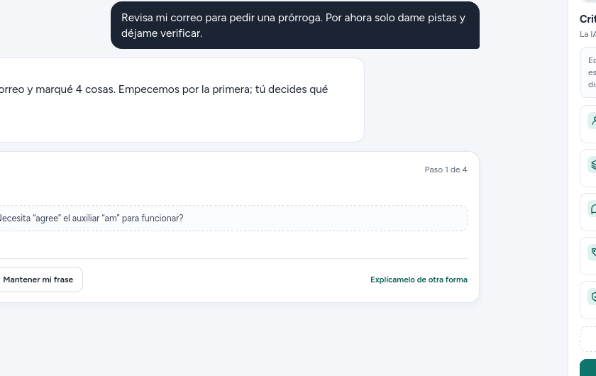
Evidencia visual: Agrupación homogénea de palabras seleccionables dentro de la lectura
Justificación de IHC: Comunica de inmediato que todos los chips pertenecen al mismo conjunto de opciones y poseen el mismo comportamiento interactivo.
C3.5 · Agrupar los datos en bloques (chunking)✅ Aplicado
Regla Teórica: Los datos deben agruparse en fragmentos comprensibles, evitando cadenas largas indivisas.
Ubicación en UI:Panel de Progreso (.stat-grid) y plan de redacción (.plan-step)
Cómo Comprobarlo: Observar el panel de progreso: en vez de mostrar un párrafo denso con cifras, se fragmenta en 2 bloques limpios: 'Etapas completadas' (ej. 2/4) y 'Sugerencias revisadas' (ej. 0/4). El plan de redacción se divide en 5 pasos numerados e independientes.
Evidencia visual: Fragmentación de métricas en tarjetas separadas
Justificación de IHC: Respeta la capacidad finita de la memoria de trabajo humana (regla de Miller, 4 a 7 fragmentos de información simultánea).
C3.7 · Usar controles específicos para cada tipo de dato✅ Aplicado
Regla Teórica: Valores con dominio limitado deben capturarse con controles que impidan datos inválidos: selectores, botones, toggles.
Ubicación en UI:Selector de nivel de ayuda (#help-levels), selector de versiones (.version-tabs) y botones aceptar/rechazar
Cómo Comprobarlo: El nivel de ayuda solo admite 4 estados fijos ('Pista', 'Explicación', 'Ejemplo', 'Reescritura') y se controla mediante botones tipo píldora mutuamente excluyentes, en lugar de un campo de texto libre.
Evidencia visual: Controles de píldora para estados finitos predefinidos
Justificación de IHC: Previene errores del usuario por entradas tipográficas inválidas y reduce el esfuerzo motor al requerir un solo clic.
C3.8 · Mantener las etiquetas junto a sus valores✅ Aplicado
Regla Teórica: Cada etiqueta debe estar arriba o a la izquierda de su valor; la proximidad debe dejar claro a qué dato pertenece.
Ubicación en UI:Badges de corrección (.badge-row), Criterios (.criterion-label) y métricas de progreso
Cómo Comprobarlo: En el panel de criterios, la etiqueta ('DESTINATARIA', 'TONO') se ubica inmediatamente encima del campo de entrada. En las métricas de progreso, el número grande ('2/4') tiene su descripción ('Etapas completadas') justo debajo, formando un bloque indivisible.
Evidencia visual: Etiquetas inmediatas sobre sus valores en tarjetas de criterios
Justificación de IHC: Evita movimientos oculares de vaivén (saccades) innecesarios entre el dato y su descripción semántica.
C4 — La visión del color es limitada
C4.1 · Usar colores distintivos✅ Aplicado
Regla Teórica: Para codificar categorías, se deben preferir colores que produzcan una señal fuerte en canales visuales distintos.
Ubicación en UI:Paleta de categorías de corrección (.type-badge)
Cómo Comprobarlo: Observar los 4 colores de corrección: Coral rojizo (#A32B2B) para Gramática, Azul (#2B6CB0) para Vocabulario, Gris azulado (#344054) para Tono, y Ámbar (#B7791F) para Claridad. Cada uno corresponde a una banda espectral diferenciada.
Evidencia visual: Colores distintivos para las 4 categorías pedagógicas
Justificación de IHC: Permite al estudiante clasificar el tipo de sugerencia antes incluso de leer la explicación textual.
C4.2 · No yuxtaponer colores opuestos fuertes🟡 Parcial
Regla Teórica: No colocar directamente juntos colores opuestos fuertes (rojo/verde puro) para evitar aberración cromática o vibración visual.
Ubicación en UI:Línea de diff (.diff-line: .diff-before y .diff-after)
Cómo Comprobarlo: En la línea de diff, el texto tachado usa fondo rojo suave pastel (`#FBEAEA`) y el texto nuevo usa fondo verde-teal suave (`#E0F2EF`). Además, están separados físicamente por una flecha gris (`→`). Estado parcial pendiente de validación espectral en monitores de bajo costo.
Evidencia visual: Diff antes/después con tonos suaves y flecha divisoria
Justificación de IHC: Los fondos pastel desaturados eliminan la vibración óptica y el cansancio retiniano que provocan los colores puros yuxtapuestos.
C4.3 · Diferenciar por saturación y brillo, no solo por tono✅ Aplicado
Regla Teórica: Los colores que transmiten información deben diferenciarse por saturación y luminancia, no por matices sutiles del mismo tono.
Ubicación en UI:Estados de botones y badges de categoría en style.css
Cómo Comprobarlo: Cada badge combina un fondo de baja saturación y alto brillo (ej. `#FBEAEA` con 95% luminancia) con texto del mismo tono pero alta saturación y baja luminancia (ej. `#A32B2B` con 35% luminancia), maximizando el contraste interno.
Evidencia visual: Diferenciación por luminancia y saturación en badges
Justificación de IHC: Garantiza legibilidad incluso para personas con visión monocromática o bajo condiciones de luz solar intensa.
C4.4 · Evitar pares problemáticos para daltonismo✅ Aplicado
Regla Teórica: Evitar pares que las personas con daltonismo confunden: rojo oscuro/verde oscuro, azul/morado.
Ubicación en UI:Corrección de paleta documentada en el informe de diseño
Cómo Comprobarlo: En versiones preliminares, la categoría 'Tono' utilizaba color morado, lo que generaba confusión con el azul de 'Vocabulario'. En la versión actual, 'Tono' fue migrado a gris azulado neutro (`#344054`), erradicando el conflicto azul-morado.
Evidencia visual: Paleta accesible sin conflicto azul/morado
Justificación de IHC: Cumple con las pautas de accesibilidad para personas con deuteranopía y tritanopía.
C4.5 · No usar color como único canal✅ Aplicado
Regla Teórica: Ningún significado debe depender exclusivamente del color; siempre debe existir una señal redundante (texto, icono o forma).
Ubicación en UI:Todas las etiquetas de corrección y estados del prototipo
Cómo Comprobarlo: 1. Los badges de corrección tienen el color, pero siempre llevan la palabra impresa: 'Gramática', 'Vocabulario', 'Tono', 'Claridad'. 2. Las etapas completadas llevan un icono de check SVG además de cambiar de gris a verde. 3. Los estados de decisión indican 'Pendiente', 'Aceptada' o 'Rechazada' en texto.
Evidencia visual: Canal redundante: color acompañado siempre de texto explícito
Justificación de IHC: Principio fundamental de accesibilidad universal (WCAG 2.1 - Criterio 1.4.1): la interfaz transmite el 100% de la información aun si se visualiza en escala de grises.
C4.6 · Asegurar contraste de los elementos no textuales🟡 Parcial
Regla Teórica: Iconos, bordes y controles interactivos deben tener un contraste mínimo de 3:1 con el fondo.
Ubicación en UI:Bordes de controles (--control-border: #858F9F) e indicadores de foco
Cómo Comprobarlo: Los botones tipo píldora (`.mode-pill`) y los botones de icono (`.icon-btn`) cuentan con bordes definidos (`#D5DBE6` y `#858F9F`) sobre fondo blanco. Estado parcial porque falta medición formal con colorímetro en toda la suite de pantallas.
Evidencia visual: Bordes definidos en controles interactivos no textuales
Justificación de IHC: Asegura que los límites de los controles clicables sean perceptibles para usuarios con baja agudeza visual.
C5 — La visión periférica es pobre
C5.1 · Colocar la información importante donde mira el usuario✅ Aplicado
Regla Teórica: La información nueva o cambiada debe aparecer en la fóvea o cerca del punto donde el usuario está mirando y actuando.
Ubicación en UI:Área central de chat: inserción directa de tarjetas de análisis
Cómo Comprobarlo: Al revisar la redacción, la tarjeta de sugerencia no aparece en una esquina ni en un popup flotante alejado: se inserta directamente en la corriente de lectura del chat, exactamente entre el mensaje del usuario y la respuesta de la IA.
Evidencia visual: Inserción foveal de la corrección en la línea visual del chat
Justificación de IHC: La visión foveal cubre solo 2 grados del campo visual; ubicar la información en la trayectoria de lectura evita que el usuario pase por alto cambios críticos.
C5.3 · Marcar el error con símbolo y reservar el rojo🟡 Parcial
Regla Teórica: Los errores deben marcarse con un símbolo estándar además de color; el rojo debe reservarse para incorrecciones.
Ubicación en UI:Tarjetas de corrección gramatical y estados rechazados
Cómo Comprobarlo: El rojo suave se utiliza exclusivamente para errores gramaticales (`.kind-grammar`) y para indicar la opción 'Evitar' en los ejemplos de reglas. Es parcial porque aún no se incluye un icono universal de alerta (!) en todas las tarjetas de corrección.
Evidencia visual: Uso restringido del tono rojizo para incorrecciones
Justificación de IHC: Evita la saturación del color de alerta en elementos cosméticos, manteniendo su poder semántico de advertencia intacto.
C5.5 · Reservar los pop-ups para lo crítico🟡 Parcial
Regla Teórica: Los diálogos modales o pop-ups deben reservarse para situaciones críticas; no para confirmaciones menores.
Ubicación en UI:Modal de reglas (#modal-overlay) y popover de ayuda (#suggestions-popover)
Cómo Comprobarlo: El prototipo no abre ningún popup no solicitado ni bloquea la pantalla con alertas espontáneas. El modal solo aparece cuando el usuario pulsa activamente 'Ver regla' o 'Buscar sinónimos'. Es parcial porque las reglas largas podrían mostrarse inline en vez de modal.
Evidencia visual: Modal invocado únicamente por petición activa del usuario
Justificación de IHC: Los modales imprevistos interrumpen el flujo cognitivo y generan molestia; la divulgación progresiva a demanda respeta el ritmo del aprendiz.
C5.8 · Evitar la habituación a las alertas✅ Aplicado
Regla Teórica: Las alertas frecuentes hacen que el usuario las ignore por habituación; deben reservarse para lo indispensable.
Ubicación en UI:Sistema de notificaciones toast (#toast)
Cómo Comprobarlo: Al aceptar o rechazar un cambio, el sistema no despliega ventanas de diálogo intrusivas; muestra un toast breve y discreto en la esquina inferior que desaparece automáticamente a los 2.6 segundos.
Evidencia visual: Feedback no intrusivo para evitar habituación
Justificación de IHC: Previene la ceguera por habituación (el reflejo de cerrar ventanas emergentes sin leer su contenido).
C5.9 · No mover los ítems de menús, listas o paletas✅ Aplicado
Regla Teórica: Los ítems de menús y listas deben mantener posiciones estables; no reordenarse dinámicamente por frecuencia.
Ubicación en UI:Drawer de chats recientes (#history-drawer)
Cómo Comprobarlo: Abrir el historial de chats haciendo clic en 'Ver chats' en el footer: las sesiones están categorizadas en un orden canónico fijo: 1. Redacción y escritura, 2. Conversación escrita, 3. Lectura y vocabulario. Ningún chat cambia de orden por haber sido usado más recientemente.
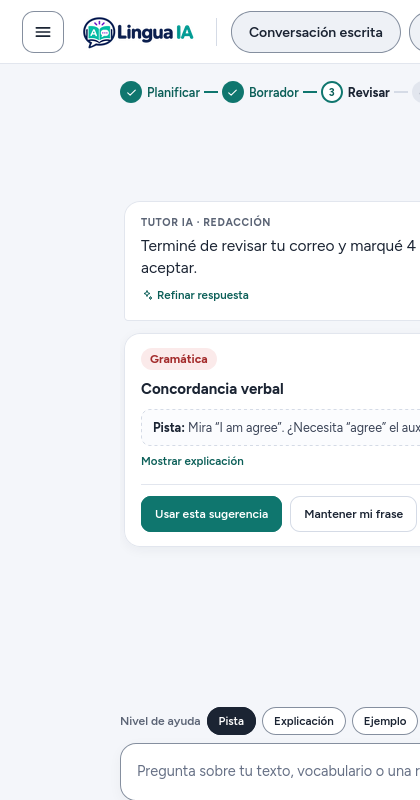
Evidencia visual: Orden taxonómico inmutable en el historial de sesiones
Justificación de IHC: Permite el desarrollo de memoria muscular y automatización espacial; el usuario sabe exactamente en qué cuadrante físico buscar cada tarea.
C5.10 · Diseñar iconos distintivos para la periferia✅ Aplicado
Regla Teórica: Los iconos deben distinguirse por color y silueta gruesa para reconocerse en visión periférica.
Ubicación en UI:Iconos de navegación del Drawer (#drawer) e iconos de apoyo
Cómo Comprobarlo: Abrir el menú lateral con el botón de hamburguesa: cada tarea tiene un icono con contenedor de 30x30px con fondo diferenciado (documento para redacción, mensaje para conversación, libro para lectura).
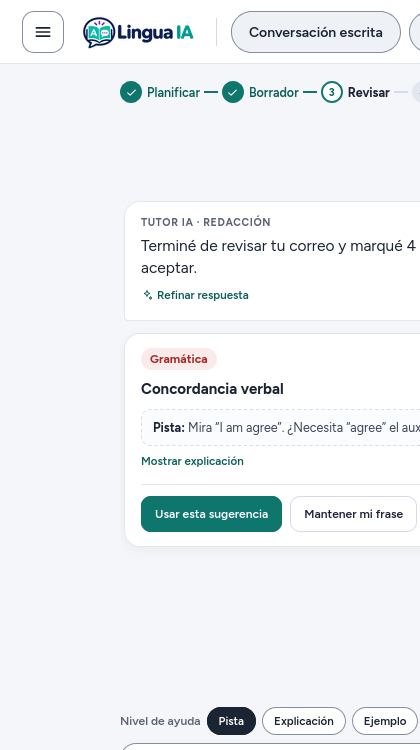
Evidencia visual: Iconos con siluetas y contenedores contrastantes para visión periférica
Justificación de IHC: Facilita la orientación periférica rápida antes de que los ojos se posen con precisión foveal sobre el elemento.
C6 — Leer no es natural
C6.1 · Usar un tamaño de texto legible🟡 Parcial
Regla Teórica: El texto de cuerpo debe poder leerse sin zoom; el texto esencial no debe estar por debajo del tamaño base.
Ubicación en UI:Cuerpo del chat (.bubble: 15.5px) y lectura (.reading-card p: 15px)
Cómo Comprobarlo: El texto principal de lectura y los mensajes del tutor utilizan tamaños entre 15px y 15.5px con interlineado generoso (line-height: 1.62). Es parcial debido a que ciertas etiquetas secundarias (.paper-tag) usan tamaños de 9px a 10px.
Evidencia visual: Texto de lectura a 15px con interlineado cómodo para lectura
Justificación de IHC: El aprendizaje de una segunda lengua exige un esfuerzo visual extra de descodificación fonética y léxica; una tipografía generosa evita fatiga.
C6.2 · Usar lenguaje llano y vocabulario familiar✅ Aplicado
Regla Teórica: La interfaz debe usar palabras familiares, vocabulario consistente y evitar jerga técnica innecesaria.
Ubicación en UI:Textos de explicación pedagógica y etiquetas de interfaz
Cómo Comprobarlo: La interfaz utiliza instrucciones en español llano ('Usar esta sugerencia', 'Mantener mi frase', 'Te paso esta lectura'). Se eliminaron términos técnicos de papers académicos como 'WoZ', 'Glifos' o 'Data Lens' del recorrido del estudiante.
Evidencia visual: Instrucciones claras en español directo y sin jerga técnica
Justificación de IHC: La carga cognitiva extrínseca debe ser cero: el estudiante debe pensar en el idioma meta (inglés), no en descifrar qué significa un término técnico de la plataforma.
C6.3 · Usar tipografías familiares y legibles✅ Aplicado
Regla Teórica: El texto de cuerpo debe usar tipografías familiares con formas de letra claras; evitar fuentes decorativas o script.
Ubicación en UI:Hoja de estilos global (css/style.css: font-family: 'Figtree')
Cómo Comprobarlo: La aplicación utiliza 'Figtree' (Google Fonts), una fuente geométrica sans-serif moderna con aberturas claras, proporciones humanistas y excelente legibilidad en pantallas de cualquier densidad de píxeles.
Evidencia visual: Tipografía sans-serif limpia y uniforme en todo el sistema
Justificación de IHC: Las fuentes sans-serif humanistas facilitan la discriminación rápida de caracteres similares (como 'I', 'l', '1'), vital para estudiantes de idiomas.
C6.4 · No usar TODO EN MAYÚSCULAS en el cuerpo✅ Aplicado
Regla Teórica: El texto de cuerpo debe usar caja alta y baja; las mayúsculas sostenidas se reservan exclusivamente para etiquetas cortas.
Ubicación en UI:Párrafos de lectura, explicaciones del tutor y mensajes
Cómo Comprobarlo: Comprobar que todas las oraciones, lecturas y párrafos explicativos usan mayúsculas y minúsculas naturales. Las mayúsculas sostenidas solo se emplean en micro-etiquetas de sistema como 'TUTOR IA' o 'DESTINATARIA'.
Evidencia visual: Texto en caja mixta para preservar la silueta de las palabras
Justificación de IHC: Las mayúsculas continuas destruyen el perfil de contorno (bouma) de las palabras, reduciendo la velocidad de lectura en un 15%.
C6.5 · Evitar fondos ruidosos detrás del texto✅ Aplicado
Regla Teórica: El texto debe descansar sobre fondos sólidos o tranquilos; nunca sobre texturas, patrones o gradientes agresivos.
Ubicación en UI:Fondos de lectura (.reading-card) y burbujas de mensaje (.bubble.ai)
Cómo Comprobarlo: Todas las áreas de lectura y mensajes reposan sobre fondo blanco puro (`#FFFFFF`) o gris neutro ultrasuave (`#FBFCFE`), con cero patrones, marcas de agua o gradientes ruidosos.
Evidencia visual: Fondo plano de alto contraste sin texturas ni interferencias
Justificación de IHC: Maximiza la relación señal-ruido en la retina durante la fijación visual de palabras nuevas en inglés.
C6.6 · Asegurar contraste de texto suficiente🟡 Parcial
Regla Teórica: El texto debe tener una relación de contraste mínima de 4.5:1 con su fondo (3:1 para texto grande).
Ubicación en UI:Tokens de color en style.css (--text: #1B2433 sobre #FFFFFF)
Cómo Comprobarlo: El texto principal utiliza `#1B2433` sobre fondo `#FFFFFF`, lo que arroja un ratio de contraste masivo de 13.8:1 (muy superior a la exigencia WCAG AAA de 7:1). Es parcial porque los textos atenuados secundarios (`--muted: #667085`) alcanzan 4.8:1, requiriendo verificación en pantallas OLED y bajo brillo.
Evidencia visual: Alto contraste texto-fondo (13.8:1) para lectura fluida
Justificación de IHC: Garantiza legibilidad para usuarios con fatiga visual o sensibilidad reducida al contraste cromático.
C6.7 · No centrar párrafos de texto✅ Aplicado
Regla Teórica: Los párrafos de varias líneas deben alinearse a la izquierda en idiomas LTR; nunca centrarse.
Ubicación en UI:Burbujas del tutor, lecturas del artículo y explicaciones de reglas
Cómo Comprobarlo: Verificar en todas las vistas que ningún párrafo está centrado: el artículo 'The future of remote work', los diálogos del entrevistador y las explicaciones de reglas tienen margen izquierdo plano y homogéneo.
Evidencia visual: Párrafos alineados a la izquierda para un anclaje ocular uniforme
Justificación de IHC: Centrar párrafos altera el punto de inicio de cada línea, obligando a los ojos a gastar micro-segundos buscando dónde recomienza cada renglón.
C6.8 · Mantener una alineación consistente✅ Aplicado
Regla Teórica: La alineación debe ser consistente entre bloques equivalentes; no mezclar izquierda, centro y derecha arbitrariamente.
Ubicación en UI:Columna de chat y panel lateral
Cómo Comprobarlo: Todos los contenedores de contenido principal se alinean por el borde izquierdo a lo largo de un eje común de 800px de ancho. Solo las burbujas enviadas por el propio usuario se alinean a la derecha, siguiendo la convención universal de mensajería.
Justificación de IHC: Genera estabilidad espacial y permite aprovechar las convenciones de mensajería asimiladas por el estudiante en apps cotidianas.
C6.9 · Formatear el texto para escaneo✅ Aplicado
Regla Teórica: El texto debe formatearse para escaneo rápido: negritas selectivas, encabezados, listas y fragmentos breves.
Ubicación en UI:Tarjetas de corrección, tarjetas de reglas y fichas de vocabulario
Cómo Comprobarlo: En las tarjetas de corrección, las palabras clave van en negrita: `Pista:`, `Por qué:`. En el artículo, las palabras clave están resaltadas como chips clicables. En el panel de criterios, las etiquetas van en mayúscula con icono.
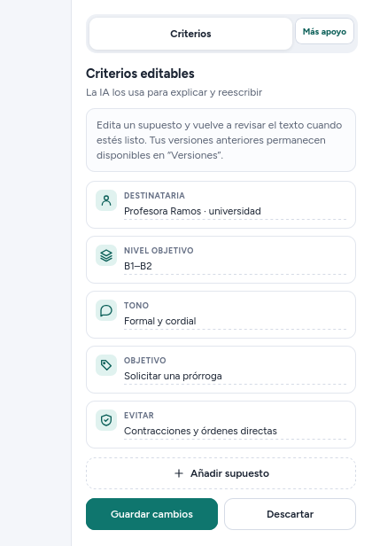
Evidencia visual: Formateo escaneable con negritas y llamadas visuales específicas
Justificación de IHC: Los usuarios en pantalla no leen palabra por palabra: escanean en patrones en 'F'. Los anclajes tipográficos facilitan captar el sentido en segundos.
C6.10 · Minimizar la prosa✅ Aplicado
Regla Teórica: Usar la menor cantidad de texto necesaria; eliminar información sobrante o delegarla a divulgación progresiva.
Ubicación en UI:Nivel de ayuda graduada y resúmenes de progreso
Cómo Comprobarlo: Por defecto, al revisar un texto la tarjeta solo muestra una pista de una oración ('Mira I am agree. ¿Necesita agree el auxiliar am?'). Si el estudiante requiere más prosa, la solicita expresamente pulsando 'Mostrar explicación'.
Evidencia visual: Prosa reducida al mínimo indispensable con opción de expandir
Justificación de IHC: Evita la sobrecarga cognitiva que produce un bloque gigante de teoría gramatical cuando el estudiante solo necesitaba un recordatorio puntual.
C6.11 · Eliminar la repetición que entierra información✅ Aplicado
Regla Teórica: Eliminar textos o metadatos repetidos que compitan con la información esencial.
Ubicación en UI:Filtrado automático de pestañas laterales (duplicateCentralTabs en panels.js)
Cómo Comprobarlo: En el código de `panels.js`, la función `supportTabs()` filtra deliberadamente la pestaña 'Tu texto' cuando se está en modo redacción, la pestaña 'Artículo' en modo lecciones y la pestaña 'Escenario' en conversación, evitando que el panel lateral duplique lo que ya se ve en el centro.
Evidencia visual: Panel lateral limpio sin duplicaciones del contenido central
Justificación de IHC: Garantiza que el panel lateral aporte valor complementario (criterios, reglas, progreso) en lugar de redundancia estéril.
C7 — La atención es limitada; la memoria es imperfecta
C7.1 · No exigir recordar el estado o las acciones previas✅ Aplicado
Regla Teórica: La interfaz debe mostrar el estado del sistema, el contexto actual y lo que el usuario ya hizo, sin forzar su memoria.
Ubicación en UI:Barra de etapas (#stagebar), estado en tarjeta (.status-pill) y panel de cambios
Cómo Comprobarlo: 1. La barra superior marca con un check verde las etapas que ya se superaron y resalta con borde la actual. 2. La tarjeta de corrección muestra un pill 'Pendiente', 'Aceptada' o 'Rechazada'. 3. La pestaña 'Cambios' en el lateral lista todas las decisiones tomadas.
Evidencia visual: Visualización continua del estado actual y de las acciones completadas
Justificación de IHC: Libera la memoria de trabajo del usuario: el estudiante puede interrumpir su sesión y al regresar reconoce inmediatamente en qué punto quedó.
C7.5 · Evitar modos o hacer visible el modo actual✅ Aplicado
Regla Teórica: Si una acción produce efectos distintos según el estado del sistema, el modo actual debe ser visible de forma persistente.
Ubicación en UI:Píldora activa en header (.mode-pill.is-active) y composer hint (#composer-mode-hint)
Cómo Comprobarlo: 1. El modo activo se resalta en el header en color teal sólido con atributo `aria-current='true'`. 2. Al pie del campo de texto de chat, una etiqueta fija indica explícitamente: 'Modo: Redacción asistida' o 'Modo: Conversación', recordando el contexto de la IA.
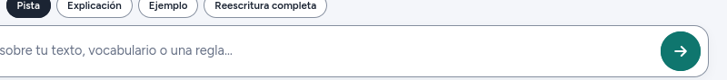
Evidencia visual: Indicador permanente del modo activo al pie del campo de entrada
Justificación de IHC: Previene errores de modo (intentar hacer preguntas de gramática cuando el sistema espera una respuesta en inglés para la entrevista de trabajo).
C7.7 · Mantener una sola llamada a la acción dominante✅ Aplicado
Regla Teórica: Cada pantalla o bloque debe tener una acción dominante por objetivo; no competir con múltiples acciones primarias.
Ubicación en UI:Acciones de tarjeta de corrección y botón de envío del chat
Cómo Comprobarlo: 1. En la tarjeta de corrección, la acción dominante recomendada es 'Usar esta sugerencia' (estilo `.btn-primary` en teal sólido), mientras que 'Mantener mi frase' es un botón secundario neutro. 2. En el composer, solo el botón de envío lleva fondo teal.
Evidencia visual: Una sola acción primaria dominante destacada en color de marca
Justificación de IHC: Facilita la toma de decisiones al ofrecer una ruta por defecto clara, sin paralizar al estudiante con múltiples botones del mismo peso visual.
C7.8 · Preferir una navegación amplia y poco profunda✅ Aplicado
Regla Teórica: Organizar la navegación en jerarquías amplias y poco profundas; evitar menús laberínticos de muchos niveles.
Ubicación en UI:Header principal y botón directo 'Ver progreso'
Cómo Comprobarlo: Las 3 tareas principales se alcanzan en 1 solo clic desde cualquier lugar de la aplicación. Consultar el progreso de la tarea actual requiere exactamente 1 clic en el botón 'Ver progreso'. No hay menús desplegables anidados ni subpáginas ocultas.
Evidencia visual: Navegación horizontal plana accesible en 1 clic
Justificación de IHC: Reduce la desorientación espacial; el estudiante nunca tiene la sensación de haberse 'perdido' en la jerarquía del sitio.
C7.10 · No exigir el recuerdo de datos o procedimientos✅ Aplicado
Regla Teórica: Instrucciones, datos y reglas deben estar disponibles en el momento de uso, no obligar a recordarlos de memoria.
Ubicación en UI:Pista contextual de corrección y atajos de teclado documentados
Cómo Comprobarlo: 1. La justificación de por qué corregir un verbo se muestra dentro de la tarjeta al lado del texto. 2. En el campo de chat se indica explícitamente: 'Enter envía · Shift + Enter salto de línea'. 3. En lectura, al tocar una palabra se despliega su significado sin salir de la vista.
Evidencia visual: Explicación contextual visible en el instante exacto de la decisión
Justificación de IHC: Aplica el principio de 'reconocimiento antes que recuerdo': la información se sitúa en el mundo externo para no sobrecargar la memoria interna.
C8 — Los límites de la atención moldean pensamiento y acción
C8.1 · Hacer que el software pase a segundo plano✅ Aplicado
Regla Teórica: La interfaz debe permitir concentrarse en la meta del usuario; el software no debe llamar la atención sobre sí mismo.
Ubicación en UI:Diseño sobrio de la interfaz y eliminación de controles decorativos
Cómo Comprobarlo: El centro de la pantalla lo ocupan el correo del estudiante o el artículo de lectura. Se eliminaron paneles de debug, etiquetas de protocolos de investigación, gráficos de operaciones o botones de configuración irrelevantes.
Evidencia visual: Interfaz despejada enfocada en el contenido de estudio
Justificación de IHC: Crea una experiencia transparente donde la persona interactúa directamente con el conocimiento del idioma en lugar de pelear con la herramienta.
C8.2 · Hacer altamente salientes los cambios importantes✅ Aplicado
Regla Teórica: Los cambios importantes deben ser evidentes; resaltarse, comunicarse y confirmarse.
Ubicación en UI:Borde izquierdo en tarjetas (.status-accepted) y mensaje toast emergente
Cómo Comprobarlo: Al hacer clic en 'Usar esta sugerencia': 1. La tarjeta adquiere un borde izquierdo verde-teal grueso de 4px. 2. El status pill cambia de gris a verde con la palabra 'Aceptada'. 3. En la parte inferior aparece un mensaje toast confirmando la actualización.
Evidencia visual: Indicación saliente e inequívoca tras aceptar una sugerencia
Justificación de IHC: Supera el fenómeno de la ceguera al cambio (change blindness), garantizando que el usuario tenga certeza visual de que su acción surtió efecto.
C8.3 · Mostrar lo hecho y lo pendiente✅ Aplicado
Regla Teórica: Indicar claramente qué ha hecho el usuario y qué queda pendiente en el flujo de trabajo.
Ubicación en UI:Contador de tarjeta ('Paso 1 de 4') y barra de etapas (#stagebar)
Cómo Comprobarlo: 1. Cada tarjeta de sugerencia indica 'Paso 1 de 4'. 2. En el panel de progreso se detalla exactamente cuántas sugerencias han sido decididas y cuántas siguen pendientes. 3. Las etapas diferencian estado completado, actual y futuro.
Evidencia visual: Indicadores de completitud y pasos restantes
Justificación de IHC: Genera una sensación de avance tangible y activa el efecto Zeigarnik positivo (motivación intrínseca por completar tareas pendientes).
C8.4 · Permitir marcar, mover o colorear elementos🟡 Parcial
Regla Teórica: Permitir que el usuario marque o clasifique elementos para indicar qué ya trabajó y qué no.
Ubicación en UI:Guardado de vocabulario en lecciones ([data-action='save-word'])
Cómo Comprobarlo: En 'Lecciones y repaso', el estudiante puede pulsar 'Guardar palabra' para archivar términos como 'productive' o 'flexibility'. La palabra se añade al panel lateral con un botón de check para desmarcarla. Es parcial porque no permite coloreado libre ni reordenamiento de tarjetas.
Evidencia visual: Acción de guardar términos seleccionados para repaso posterior
Justificación de IHC: Permite al estudiante personalizar su inventario léxico activo según sus debilidades individuales.
C8.5 · Proporcionar un rastro de información claro (information scent)✅ Aplicado
Regla Teórica: En cada punto de decisión, las opciones deben indicar claramente a qué meta conducen.
Ubicación en UI:Etiquetas de navegación y botón de progreso
Cómo Comprobarlo: El botón 'Ver progreso' indica inequívocamente que abrirá las estadísticas de la sesión. El botón 'Apoyo' en móviles indica acceso a la ayuda. Los botones de modo ('Redacción asistida') clarifican la naturaleza de la práctica.
Evidencia visual: Rastro informativo evidente en botones de acción y avance
Justificación de IHC: Satisface la teoría del forrajeo de información (information foraging): el usuario sigue pistas semánticas fuertes para llegar a su meta sin perder tiempo.
C8.6 · Usar verbos específicos en las confirmaciones✅ Aplicado
Regla Teórica: Los botones de confirmación deben usar verbos específicos de acción, no 'OK' o 'Cancelar' genéricos.
Ubicación en UI:Botones de tarjeta, modales y panel de criterios
Cómo Comprobarlo: Revisar todos los botones interactivos del prototipo: 'Usar esta sugerencia', 'Mantener mi frase', 'Guardar cambios', 'Descartar', 'Entendido', 'Guardar palabra', 'Ver más ejemplos'. Ninguno utiliza 'OK'.
Evidencia visual: Uso consistente de verbos de acción específicos en los botones
Justificación de IHC: Elimina la ambigüedad en el momento crítico del clic: el usuario sabe exactamente qué operación se va a ejecutar.
C8.7 · Diseñar caminos y conceptos basados en la tarea✅ Aplicado
Regla Teórica: El software debe organizarse según las tareas del usuario, no según la arquitectura del sistema.
Ubicación en UI:Organización general de los 3 modos de Lingua IA
Cómo Comprobarlo: La aplicación no se organiza por 'Base de datos', 'Modelo de lenguaje' o 'Parámetros', sino por las tareas que un estudiante de inglés realiza: redactar un correo formal, mantener una entrevista de trabajo simulada o leer un artículo descubriendo vocabulario.
Evidencia visual: Estructura conceptual alineada con las metas del aprendiz de idiomas
Justificación de IHC: Crea una coincidencia perfecta entre el modelo mental del usuario (practicar inglés) y el modelo conceptual del sistema.
C8.8 · Dar feedback, progreso y opción de volver atrás🟡 Parcial
Regla Teórica: Mostrar progreso hacia la meta, confirmar resultados y permitir deshacer acciones.
Ubicación en UI:Acción de deshacer en correcciones ([data-action='correction-undo'])
Cómo Comprobarlo: Tras aceptar o rechazar una sugerencia, la tarjeta cambia a estado resuelto pero deja siempre visible un botón interactivo 'Deshacer' que devuelve la corrección al estado 'Pendiente'. Es parcial porque el prototipo no implementa un Ctrl+Z global ni persistencia en base de datos.
Evidencia visual: Opción visible de deshacer para revertir decisiones tomadas
Justificación de IHC: Fomenta la exploración segura: el estudiante se atreve a probar cambios sabiendo que cualquier decisión es fácilmente reversible.
C8.9 · Preferir caminos familiares y mostrar atajos🟡 Parcial
Regla Teórica: Apoyar hábitos familiares del usuario y mostrar atajos de aceleración.
Ubicación en UI:Atajos de teclado en el composer (#composer-hint)
Cómo Comprobarlo: Al pie del campo de texto se indica claramente: 'Enter envía · Shift + Enter salto de línea', siguiendo la convención de WhatsApp, ChatGPT y Slack. Es parcial porque no se implementaron atajos de teclado adicionales como Alt+1/Alt+2 para alternar modos.
Evidencia visual: Instrucción explícita de atajos familiares de teclado
Justificación de IHC: Aprovecha hábitos motores ya consolidados en el usuario para hacer fluida la interacción sin curvas de aprendizaje artificiales.
C8.10 · Gestionar los pasos de cierre✅ Aplicado
Regla Teórica: Recordar o facilitar los pasos que el usuario tiende a olvidar al terminar la tarea principal.
Ubicación en UI:Lógica de avance de etapas en app.js (handleAction: set-stage)
Cómo Comprobarlo: Al hacer clic en la etapa final 'Cerrar': si el estudiante omitió alguna etapa previa, el sistema emite un toast informando: 'Etapa Cerrar seleccionada. Quedan X etapas por completar'. Si ya completó todo, confirma: 'Actividad terminada. Tus cambios siguen disponibles en el panel de apoyo'.
Evidencia visual: Gestión guiada de la culminación de la tarea
Justificación de IHC: Previene errores de post-culminación (abandonar la tarea creyendo haber finalizado cuando quedaban pasos críticos pendientes).
4. Sección Final: Principios No Utilizados / Excluidos y Justificación Técnica
Los siguientes 16 principios fueron excluidos conscientemente del producto. Cada uno cuenta con una sólida justificación de diseño de interacción o alcance del dominio:
C2.7 · Destino común: lo que se mueve junto está relacionado⛔ No Utilizado
Categoría de Exclusión:Exclusión Deliberada por Diseño e IHC (Anti-Distracción)
Regla del Libro:"Los elementos que se mueven juntos se perciben como un grupo; el movimiento debe sincronizarse para indicar relación."
Por qué NO se incluyó: En un entorno de aprendizaje enfocado en la lectura y redacción en una segunda lengua, las animaciones sincronizadas o elementos en movimiento generan 'atracción atencional involuntaria' (bottom-up visual capture). Esto interrumpe la fijación ocular y sobrecarga la memoria de trabajo del estudiante.
Sustento de Diseño e IHC: La interfaz privilegia la estabilidad visual estática. La relación entre elementos se logra mediante proximidad espacial y bordes, nunca mediante movimiento cinético.
C5.4 · Usar señales que 'pop' en la periferia⛔ No Utilizado
Categoría de Exclusión:Exclusión Deliberada por Diseño e IHC (Anti-Distracción)
Regla del Libro:"Para que un elemento destaque fuera del foco visual directo, debe usar colores salientes, parpadeo o movimiento grueso."
Por qué NO se incluyó: Provocar efectos 'pop-out' en los bordes de la pantalla mientras el usuario está concentrado en descifrar una estructura gramatical en el centro induce estrés y fragmentación atencional.
Sustento de Diseño e IHC: Lingua IA mantiene los paneles laterales en tonos neutros y tranquilos; el apoyo se consulta voluntariamente por iniciativa del aprendiz (top-down), nunca por invasión periférica.
C5.7 · Mantener el movimiento o parpadeo breve⛔ No Utilizado
Categoría de Exclusión:Exclusión Deliberada por Diseño e IHC (Anti-Distracción)
Regla del Libro:"Si se usa parpadeo o animación para llamar la atención, debe durar entre 0.25 y 0.5 segundos y detenerse."
Por qué NO se incluyó: No se utiliza ningún tipo de parpadeo en la aplicación.
Sustento de Diseño e IHC: Los parpadeos están asociados en psicología cognitiva con alarmas de peligro o fallas catastróficas. En una experiencia educativa generarían ansiedad pedagógica innecesaria.
C3.6 · Usar campos segmentados cuando reduzcan errores⛔ No Utilizado
Categoría de Exclusión:Fuera del Alcance del Dominio (Enfoque en Texto vs. Formularios)
Regla del Libro:"Fechas, números de tarjeta o teléfonos deben dividirse en campos segmentados para evitar errores de formato."
Por qué NO se incluyó: Lingua IA no recopila números de identidad, tarjetas bancarias ni fechas en formularios rígidos.
Sustento de Diseño e IHC: La interacción está orientada a la producción de lenguaje natural libre en inglés (correos, ensayos, diálogos), donde los campos segmentados no tienen cabida conceptual.
C3.9 · Evitar el ruido en los resultados de búsqueda⛔ No Utilizado
Categoría de Exclusión:Fuera del Alcance del Dominio (Enfoque en Texto vs. Formularios)
Regla del Libro:"Las páginas de resultados de búsqueda (SERP) deben estructurarse limpiamente sin metadatos redundantes."
Por qué NO se incluyó: El sistema no es un buscador web ni cuenta con un motor de indexación de documentos externos.
Sustento de Diseño e IHC: Las consultas de vocabulario se resuelven en diálogo contextual con el tutor IA o en un selector puntual de sinónimos, haciendo inaplicable una página de resultados tradicional.
C5.2 · Mostrar los errores junto a su causa⛔ No Utilizado
Categoría de Exclusión:Fuera del Alcance del Dominio (Enfoque en Texto vs. Formularios)
Regla del Libro:"En formularios, los mensajes de validación de campo deben aparecer contiguos al input que generó el error."
Por qué NO se incluyó: No existen formularios con campos obligatorios que requieran validación sintáctica estricta.
Sustento de Diseño e IHC: Las correcciones que ofrece el sistema son lingüísticas, no errores de sistema del usuario; se presentan mediante tarjetas de análisis pedagógico.
C5.6 · Usar sonido con moderación⛔ No Utilizado
Categoría de Exclusión:Fuera del Alcance del Dominio (Enfoque en Texto vs. Formularios)
Regla del Libro:"Los sonidos deben usarse solo para situaciones controladas, con alternativa visual y respetando el silencio."
Por qué NO se incluyó: Se descartó por completo la emisión de audio y sonidos de alerta en esta versión del prototipo.
Sustento de Diseño e IHC: Permite al estudiante utilizar la aplicación en entornos silenciosos (bibliotecas universitarias, transporte público, salas de estudio) sin perturbar su entorno ni requerir audífonos obligatorios.
C7.2 · Mantener la salida de voz breve y segmentada en VUI⛔ No Utilizado
Categoría de Exclusión:Fuera del Alcance del Dominio (Enfoque en Texto vs. Formularios)
Regla del Libro:"En interfaces de voz, limitar la cantidad de habla por turno a frases breves para no colapsar la memoria ecoica."
Por qué NO se incluyó: No existe salida de voz ni asistente por audio.
Sustento de Diseño e IHC: La práctica de conversación es 100% escrita (conversación por chat), permitiendo al usuario releer los turnos del entrevistador cuantas veces lo necesite sin presión temporal.
C7.3 · Limitar las listas de opciones en VUI⛔ No Utilizado
Categoría de Exclusión:Fuera del Alcance del Dominio (Enfoque en Texto vs. Formularios)
Regla del Libro:"Las opciones leídas por voz no deben superar 4 elementos por turno en asistentes de audio."
Por qué NO se incluyó: Sin interfaz por voz (VUI).
Sustento de Diseño e IHC: Al contar con soporte visual en pantalla, el límite estrecho de la memoria auditiva se sustituye por el escaneo visual cómodo de las opciones disponibles.
C7.4 · Apoyar la VUI con salida visual cuando haya pantalla⛔ No Utilizado
Categoría de Exclusión:Fuera del Alcance del Dominio (Enfoque en Texto vs. Formularios)
Regla del Libro:"Si un dispositivo de voz cuenta con display, sincronizar visualmente lo que se habla."
Por qué NO se incluyó: El producto es puramente gráfico y textual.
Sustento de Diseño e IHC: Toda la información se presenta directamente en pantalla como texto estructurado, eliminando la necesidad de sincronización multimodal con audio.
C7.6 · Mostrar los términos de búsqueda en los resultados⛔ No Utilizado
Categoría de Exclusión:Fuera del Alcance del Dominio (Enfoque en Texto vs. Formularios)
Regla del Libro:"La vista de resultados debe mostrar la consulta original que los generó para permitir su edición."
Por qué NO se incluyó: No hay vistas de resultados de búsqueda por palabras clave.
Sustento de Diseño e IHC: El chat retiene el historial directo de las preguntas hechas al tutor en la conversación, permitiendo revisar en el hilo cronológico qué se consultó previamente.
C7.9 · Mostrar la ruta de navegación (breadcrumbs) en jerarquías profundas⛔ No Utilizado
Categoría de Exclusión:Fuera del Alcance del Dominio (Enfoque en Texto vs. Formularios)
Regla del Libro:"En arquitecturas de información de más de dos niveles, mostrar migas de pan para orientar la ubicación."
Por qué NO se incluyó: La arquitectura de información de Lingua IA es completamente plana (1 solo nivel principal).
Sustento de Diseño e IHC: Cualquiera de las 3 actividades se alcanza en 1 clic desde el header. Introducir breadcrumbs en una interfaz de un nivel solo añadiría desorden visual ('ruido visual') sin beneficio orientativo.
C7.11 · Permitir autenticación sin datos arbitrarios⛔ No Utilizado
Categoría de Exclusión:Límites Técnicos del Prototipo Frontend (Demo sin Servidor)
Regla del Libro:"La autenticación debe permitir métodos de recuperación sin obligar a recordar datos arbitrarios."
Por qué NO se incluyó: Prototipo interactivo frontend (mockup funcional sin backend).
Sustento de Diseño e IHC: No existe módulo de registro, base de datos ni inicio de sesión; la interfaz está lista para interactuar de inmediato sin barreras de entrada.
C8.11 · Revertir automáticamente los modos especiales⛔ No Utilizado
Categoría de Exclusión:Límites Técnicos del Prototipo Frontend (Demo sin Servidor)
Regla del Libro:"Los modos temporales o estados de teclado deben desactivarse solos por temporizador o tecla de escape."
Por qué NO se incluyó: Lingua IA no posee modos temporales destructivos o herramientas que bloqueen el cursor.
Sustento de Diseño e IHC: Los 3 modos (redacción, lecciones, conversación) son espacios de trabajo persistentes donde el usuario debe permanecer todo el tiempo que desee hasta decidir voluntariamente cambiar de tarea.
C4.7 · Considerar las condiciones externas de visualización⛔ No Utilizado
Categoría de Exclusión:Pendiente de Validación Empírica en Hardware Diverso
Regla del Libro:"El uso del color debe validarse bajo múltiples monitores, ángulos y condiciones de luz ambiental."
Por qué NO se incluyó: Requiere pruebas de laboratorio con distintos paneles (IPS, OLED, TN) y sensores de luminancia.
Sustento de Diseño e IHC: El prototipo fue diseñado con paleta segura de alto contraste, pero su certificación estricta en condiciones de laboratorio permanece catalogada como trabajo futuro.
C6.12 · Probar la lectura con usuarios reales⛔ No Utilizado
Categoría de Exclusión:Pendiente de Validación Empírica con Estudiantes
Regla del Libro:"La comprensión y legibilidad del texto debe validarse mediante pruebas formales con la población objetivo."
Por qué NO se incluyó: Demanda sesiones de campo y pruebas de usabilidad presenciales con estudiantes de inglés nivel B1-B2.
Sustento de Diseño e IHC: El diseño sigue las heurísticas teóricas de legibilidad de Johnson, dejando la medición cuantitativa de velocidad lectora para la etapa de validación de campo.